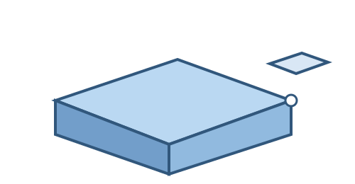

← Examples / 4 · Associative corner anchor
Small API regression fixture
4 · Associative corner anchor
Attach one reusable component to a named corner that follows parent size changes.

Python source
class Base:
width = 40.0
height = 20.0
def build(self):
return Box(self.width, 30, self.height)
class Marker:
def build(self):
return Box(10, 10, 10)
class CornerAnchor:
base_width = 40.0
base_height = 20.0
def build(self):
base = Base(
width=self.base_width,
height=self.base_height,
)
marker = Marker().attach(
base,
parent=Anchor.FRONT_TOP_RIGHT,
child=Anchor.BACK_TOP_RIGHT,
)
return base + marker
CornerAnchor()
Generated command sequence
parameters.addparameters.addcomponent.createsketch.createsketch.rectangle.two_pointsketch.finishsolid.extrudecomponent.activatejoint.origincomponent.createsketch.createsketch.rectangle.two_pointsketch.finishsolid.extrudecomponent.activatejoint.createbrowser.visibility